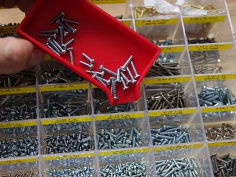
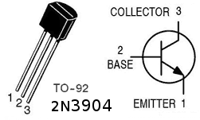
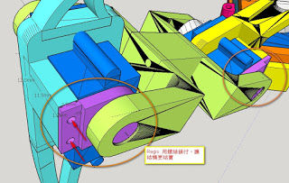

2015-09-15 - Nº 20
Editorial
Aqui está a Newsletter Nº 20 no seu formato habitual.
Esta Newsletter encontra-se mais uma vez disponível no sistema documenta do altLab. Todas as Newsletters encontram-se indexadas no link.
Esta Newsletter tem os seguintes tópicos:
Um paciente espanhol vai recebeu um conjunto de costelas impressas em 3D para substituir as suas. A Xerox desenvolveu um Chip capaz de se auto destruir em 10 segundos. A Boeing desenvolveu o primeiro Satélite de propulsão totalmente eléctrica. A Maker Faire Lisboa é já no próximo fim-de-semana e eu e o altLab lá estaremos. Nesta Newsletter iremos apresentar um projeto de maker que é um spider robot com 4 pernas. Iremos construir um circuito para um emissor de rádio FM.
 João Alves ([email protected])
João Alves ([email protected])
O conteúdo da Newsletter encontra-se sob a licença  Creative Commons Attribution-NonCommercial-ShareAlike 4.0 International License.
Creative Commons Attribution-NonCommercial-ShareAlike 4.0 International License.
Novidades da Semana ^
Cancer patient receives 3D printed ribs in world first surgery
"Suffering from a chest wall sarcoma (a type of tumour that grows in and around the rib cage), the 54-year-old man needed his sternum and a portion of his rib cage replaced. This part of the chest is notoriously tricky to recreate with prosthetics, due to the complex geometry and intricate structures involved. So the patient’s surgical team from Salamanca University Hospital determined that a fully customisable 3D printed sternum and rib cage was the best option. That’s when they turned to Melbourne-based medical device company Anatomics, who designed and manufactured the implant utilising CSIRO’s 3D printing facility, Lab 22."
Xerox PARC's new chip will self destruct in 10 seconds
"Engineers at Xerox PARC have developed a chip that will self-destruct upon command, providing a potentially revolutionary tool for high-security applications. The chip, developed as part of DARPA’s vanishing programmable resources project, could be used to store data such as encryption keys and, on command, shatter into thousands of pieces so small, reconstruction is impossible."
Boeing: World’s First All-Electric Propulsion Satellite Begins Operations

"The world’s first all-electric propulsion satellite, built by Boeing [NYSE: BA] for Bermuda-based ABS, is now operational after an on-orbit handover on August 31. The ABS-3A, a 702SP (small platform) satellite, expands ABS’ communications services in the Americas, Europe, the Middle East and Africa. The ABS-3A spacecraft was the world’s first all-electric propulsion satellite to be built and launched – part of a stacked pair launched in March with a 702SP satellite built for Eutelsat, based in Paris. The spacecraft’s all-electric xenon-ion propulsion system contains a sufficient quantity of the inert, non-hazardous element xenon to extend the satellite’s operations beyond the expected spacecraft design life of 15 years."
Ciência e Tecnologia ^
Rapid, Puncture-Initiated Healing via Oxygen-Mediated Polymerization
"Autonomously healing materials that utilize thiol–ene polymerization initiated by an environmentally borne reaction stimulus are demonstrated by puncturing trilayered panels, fabricated by sandwiching thiol–ene–trialkylborane resin formulations between solid polymer panels, with high velocity projectiles; as the reactive liquid layer flows into the entrance hole, contact with atmospheric oxygen initiates polymerization, converting the liquid into a solid plug. Using infrared spectroscopy, we find that formulated resins polymerize rapidly, forming a solid polymer within seconds of atmospheric contact. During high-velocity ballistics experiments, additional evidence for rapid polymerization is provided by high-speed video, demonstrating the immediate viscosity increase when the thiol–ene–trialkylborane resins contact atmospheric oxygen, and thermal imaging, where surface temperature measurements reveal the thiol–ene reaction exotherm, confirming polymerization begins immediately upon oxygen exposure. While other approaches for materials self-repair have utilized similar liquid-to-solid transitions, our approach permits the development of materials capable of sealing a breach within seconds, far faster than previously described methods."
-
"Wormholes are fascinating cosmological objects that can connect two distant regions of the universe. Because of their intriguing nature, constructing a wormhole in a lab seems a formidable task. A theoretical proposal by Greenleaf et al. presented a strategy to build a wormhole for electromagnetic waves. Based on metamaterials, it could allow electromagnetic wave propagation between two points in space through an invisible tunnel. However, an actual realization has not been possible until now. Here we construct and experimentally demonstrate a magnetostatic wormhole. Using magnetic metamaterials and metasurfaces, our wormhole transfers the magnetic field from one point in space to another through a path that is magnetically undetectable. We experimentally show that the magnetic field from a source at one end of the wormhole appears at the other end as an isolated magnetic monopolar field, creating the illusion of a magnetic field propagating through a tunnel outside the 3D space. Practical applications of the results can be envisaged, including medical techniques based on magnetism."
A method for building self-folding machines
"Origami can turn a sheet of paper into complex three-dimensional shapes, and similar folding techniques can produce structures and mechanisms. To demonstrate the application of these techniques to the fabrication of machines, we developed a crawling robot that folds itself. The robot starts as a flat sheet with embedded electronics, and transforms autonomously into a functional machine. To accomplish this, we developed shape-memory composites that fold themselves along embedded hinges. We used these composites to recreate fundamental folded patterns, derived from computational origami, that can be extrapolated to a wide range of geometries and mechanisms. This origami-inspired robot can fold itself in 4 minutes and walk away without human intervention, demonstrating the potential both for complex self-folding machines and autonomous, self-controlled assembly."
Cursos MOOC ^
- Technology Entrepreneurship - Começa a 16 de Setembro.
- Begin Robotics - Começa a 21 de Setembro.
- Cryptography II - Começa a 19 de Outubro.
Modelos 3D ^
Com a disponibilidade de ferramentas que permitem dar azo a nossa imaginação na criação de peças 3D e espaços como o thingiverse para as publicar, esta rubrica apresenta alguns modelos selecionados que poderão ser úteis.
Push Drill with Adjustable Chuck (http://www.thingiverse.com/thing:792988)
Inspired by Speedy777's Pump Drill [link](http://www.thingiverse.com/thing:731086, which was inspired by Performance 3D's drill), this slightly beefier version features an adjustable chuck that can handle bits from 5mm (3/16") down to 1.5mm (1/16"). The end of the bit seats in the conical shaped chuck cavity, and the flexy fingers at the tip grab further up the shank. You get 2 full rotations per stroke for fast drilling. It also works as a pin vise for holding needle files.
Small Parts Funnel Tray (http://www.thingiverse.com/thing:918864)

I was shocked when I couldn't find one of these already on Thingiverse, so I made one.
Parametric pulley - lots of tooth profiles (http://www.thingiverse.com/thing:16627)
This thing will create a range of metric and imperial tooth profile pulleys, with any number of teeth, specified in the Openscad file. Tooth profiles currently supported are MXL, 40DP, XL, L, T2.5, T5, T10, AT5, HTD (3mm, 5mm, 8mm) and GT2 (2mm, 3mm 5mm). NOTE: error in script regarding L and H pulleys spotted by OSTycoon (see comments) - the script says H, but actually it is L profile. There are a range of editable parameters for editing the fit of the tooth (to account for printer variation), the pulley base, captive nut(s) slot for the set screw, motor shaft diameter, pulley height and belt retainers. The attached stls are reference pulleys, mostly around the size used on repraps.
Details After creating the parametric pulley http://www.thingiverse.com/thing:11256 I realised this way of modelling them was only going to work for square-toothed pulleys, and a way of producing pulleys for belts with better characteristics for linear motion was required. I found dxf drawings of the relevant tooth profiles here http://oem.cadregister.com/asp/PPOW_Entry.asp?company=915217&elementID=07807803/METRIC/URETH/WV0025/F and modelled pulley diameter from data here http://www.sdp-si.com/D265/HTML/D265T016.html There were a couple of possible approaches to importing the data, I chose to simplify the bezier curve dxf data in Inkscape, producing vertices with a resolution of around 0.05-0.1mm for each tooth. Another advantage is the the pulleys have the tooth ramp for smooth entry and exit of the belt tooth into the pulley. I'm not really sure 3D printers can take full advantage of this yet, but quality is improving all the time! If other tooth profiles are required, or you model any, please pass them on to me and I will include them.
Circuitos ^
Aqui é apresentado um circuito simples que poderá ser construído com componentes.
Emissor de FM simples

Hoje será construído um circuito para criar um emissor de FM muito simples. Este circuito como outros encontra-se bastante divulgado na Internet e apresenta uma configuração muito simples uma vez que apenas usa um Transístor NPN. De notar que este circuito foi montado logo numa veroboard pois não funcionará muito bem em Breadboard.
O Circuito usa o que se chama o "Factor Q" da rede que é conseguida pela bobine e pelo condensador para produzir uma voltagem alta. Para que o resultado seja mais efectivo deverá garantir-se que a bobine se encontra o mais próximo possível do condensador.
Para se construir a bobine deverá usar o parafuso M6 para enrolar 8 espiras à volta dele para formar a bobine.
Para regular a frequência de emissão deverá ser rodada o condensador variável com uma chave que não seja metálica (para não afectar a emissão).
Pode ser usado outro transístor NPN.
Esquemático
Componentes (BOM):
Circuito:
- 1x NPN 2N3904
- 1x Condensador Variável entre 10 e 40nF (C1)
- 1x Condensador de 5pF (C2)
- 1x Condensador de 22pF (C3)
- 1x Condensador 1nF (C4)
- 1x Resistência de 4.7K Ohms (R1)
- 1x Resistência de 330 Ohms (R2)
- 1x Indutor (L1)
- 1x MIC
- 1x Bateria de 9V
Pin-out dos IC/Componentes

Links úteis:
- Spy Circuits - FM Bug Transmitters
- How to Build a Spy Circuits – FM Bug Transmitters
- Build the 2 transistor Spy Transmitter
Artigo do Maker ^
Projeto interessante publicado por um maker.
Spider Robot
O projecto de maker da semana foi feito pelo Regis Hsu e encontra-se publicado no seguinte link.
É um robot tipo aranha. Que usa quarto patas para se deslocar. Foi desenvolvido ao longo de um ano e encontra-se documentado no blog do autor.
Passo 1: Preparação das peças electricas
Aqui estão as partes necessárias:
- 1x Arduino Pro Mini
- 1x DC-DC(12-5v/3A output)
- 1x módulo Bluetooth HC-06 (opção)
- 12x SG90 servo(3DOF para as 4 pernas)
- 1x bateria de 3000mhA Li
- 1x 12V Jack
- 1x Resistência de 680 Ohm 1/4 watt 5%
- 1x LED 3mm Azul
- 1x Botão táctil
- 1x perfboard de 5x7cm
- Alguns headers macho e fêmea.
- Fio (uni ou multifilar)
Passo 2: Construir a placa principal

Ver no ficheiro do esquemático para se perceber melhor as conexões e colocar os componentes de acordo com as imagens.
Algumas dicas:
- Ter a certeza que a saída do modulo DC-DC é 5V
- Os servos gastam bastante energia (perto de 3A) em condições de utilização total.
- Verificar com o multímetro se as ligações estão corretamente feitas.
- Use um header fêmea em vez de soldar os módulos diretamente na perfboard.
- O LED ficará ligado quando o botão estiver desligado. Foi assim desenhado para que se possa ter a certeza que o robot está alimentado.
Passo 3: testar a placa principal
Processo de teste:
- Não ligar o DC-DC e o Arduino Pro Mini na placa principal
- Ligar a bateria ao Jack de 12V da placa principal
- Verificar o LED, se acender, é um bom começo
- Carregar no botão de ligar, o LED deverá ficar apagado
- Usando um multímetro verifique que todos os pontos de +5V e de GND estão corretos.
- Carregue no botão de ligar novamente, o LED deverá acender.
- Ligue o modulo DC-DC e o Arduino Pro Mini à placa principal
- Carregue no botão de ligar, o LED apagará, mas o LED do Arduino Mini ficará ligado
Depois desligue o robot, e ligue um servo na primeira perna do robot com a indicação de Leg1 (pino 2 do Arduino) Carregue no código "servo_test" no Arduino para verificar o funcionamento do servo (deverá movimentar-se entre os 0 e os 180 graus).
O código "servo_test":
/* Sweep
by BARRAGAN <http://barraganstudio.com>
This example code is in the public domain.
modified 8 Nov 2013
by Scott Fitzgerald
http://www.arduino.cc/en/Tutorial/Sweep
*/
#include <Servo.h>
Servo myservo; // create servo object to control a servo
// twelve servo objects can be created on most boards
int pos = 0; // variable to store the servo position
void setup() {
myservo.attach(2); // attaches the servo on pin 2 to the servo object
}
void loop() {
for (pos = 0; pos <= 180; pos += 1) { // goes from 0 degrees to 180 degrees
// in steps of 1 degree
myservo.write(pos); // tell servo to go to position in variable 'pos'
delay(15); // waits 15ms for the servo to reach the position
}
for (pos = 180; pos >= 0; pos -= 1) { // goes from 180 degrees to 0 degrees
myservo.write(pos); // tell servo to go to position in variable 'pos'
delay(15); // waits 15ms for the servo to reach the position
}
}
Passo 4: Construir as partes mecânicas: Descarregar os ficheiros STL
Neste passo iremos imprimir em 3D as partes mecânicas do robot. Descarregue as partes do link do thingiverse ou localmente.
Lista de partes a imprimir:
- 1x body_d.stl
- 1x body_u.stl
- 2x coxa_l.stl
- 2x coxa_r.stl
- 2x tibia_l.stl
- 2x tibia_r.stl
- 4x femur_1.stl
- 8x s_hold.stl
Passo 5: Imprimir os objectos 3D
A impressão de todas as peças deve demorar cerca de 7 a 8 horas por isso verifique bem se as configurações da impressora estão correctas. É sugerida que seja usado uma densidade de enchimento de cerca de 35% para criar a estrutura das pernas mais forte.
Podem ser impressas as peças por grupo de cores.
Passo 6: Preparação para a montagem
Verifique a qualidade das peças impressas. Pode ser usada lixa para polir um pouco as superficies e retirar as imperfeições.
Passo 7: Montagem do corpo
Coloque a bateria entre a parte superior da caixa e a parte inferior juntando-as com 4 parafusos M3x25mm.
Passo 8: Montagem da perna

E instalar todos os servos com as partes das pernas, cada perna tem 3 servos e 4 parafusos (M1.6x3mm)
Notas:
- Ligar todas as partes com parafusos e os servos mas nao ligar o braço "rocker" neste passo.
- Verifique a direção da perna - verifique a imagem
Passo 9: Integração das pernas no corpo
Ligar as pernas todas no corpo, verificar se todos os servos e juntas se movem bem.
Passo 10: Ligar os servos à placa principal
Coloque a placa principal na caixa do corpo e fixe-a com cerâmica plástica.
Ligue os pinos de acordo com o indicado na imagem (cor rosa). A cor verde apresenta a direção do sinal do fio do servo, amarelo liga ao "S", vermelho ao "+" e castanho ao "-".
Tenha a certeza que os servos das pernas estão ligados aos pinos certos e nas direções certas das pernas, de outra forma o robot ficará "louco"!
Passo 11: Localizar a posição inicial das pernas
Procedimento de instalação:
- carregar o código "legs_init" para o Arduino para activar os servos
- Colocar as pernas na posição apresentada na imagem acima, instalar o servo rocker com parafusos.
- Apertar bem todos os parafusos
O código "legs_init" :
// Locate the initial position of legs
// RegisHsu 2015-09-09
#include <Servo.h>
Servo servo[4][3];
//define servos' ports
const int servo_pin[4][3] = { {2, 3, 4}, {5, 6, 7}, {8, 9, 10}, {11, 12, 13} };
void setup()
{
//initialize all servos
for (int i = 0; i < 4; i++)
{
for (int j = 0; j < 3; j++)
{
servo[i][j].attach(servo_pin[i][j]);
delay(100);
}
}
while (1);
}
void loop(void)
{
}
Passo 12: Organização dos Fios
Agora, falta organizar os fios para que o robot tenha bom aspecto.
Finalmente toda a instalação do hardware está completa.
Passo 13: Hora de ver o robot a mexer!
Veja o Video do robot em acção.
Carregar o código "spider_open_v1" no Arduino para o fazer mover.
A sequência de acções programadas são:
- Por-se em pé, espera 2 segundos
- Avança para a frente 5 passos, espera 2 segundos
- Recua para trás 5 passos, espera 2 segundos
- Vira à direita, espera 2 segundos
- Vira à esquerda, espera 2 segundos
- Move a mão, espera 2 segundos
- Abana a mão, espera 2 segundos
- Senta-se, espera 2 segundos
- Volta ao passo 1
/* -----------------------------------------------------------------------------
- Project: Remote control Crawling robot
- Author: [email protected]
- Date: 2015/1/27
-----------------------------------------------------------------------------
- Overview
- This project was written for the Crawling robot desigened by Sunfounder.
This version of the robot has 4 legs, and each leg is driven by 3 servos.
This robot is driven by a Ardunio Nano Board with an expansion Board.
We recommend that you view the product documentation before using.
- Request
- This project requires some library files, which you can find in the head of
this file. Make sure you have installed these files.
- How to
- Before use,you must to adjust the robot,in order to make it more accurate.
- Adjustment operation
1.uncomment ADJUST, make and run
2.comment ADJUST, uncomment VERIFY
3.measure real sites and set to real_site[4][3], make and run
4.comment VERIFY, make and run
The document describes in detail how to operate.
---------------------------------------------------------------------------*/
// modified by Regis for spider project
/* Includes ------------------------------------------------------------------*/
#include <Servo.h> //to define and control servos
#include <FlexiTimer2.h>//to set a timer to manage all servos
/* Servos --------------------------------------------------------------------*/
//define 12 servos for 4 legs
Servo servo[4][3];
//define servos' ports
const int servo_pin[4][3] = { {2, 3, 4}, {5, 6, 7}, {8, 9, 10}, {11, 12, 13} };
/* Size of the robot ---------------------------------------------------------*/
const float length_a = 55;
const float length_b = 77.5;
const float length_c = 27.5;
const float length_side = 71;
const float z_absolute = -28;
/* Constants for movement ----------------------------------------------------*/
const float z_default = -50, z_up = -30, z_boot = z_absolute;
const float x_default = 62, x_offset = 0;
const float y_start = 0, y_step = 40;
/* variables for movement ----------------------------------------------------*/
volatile float site_now[4][3]; //real-time coordinates of the end of each leg
volatile float site_expect[4][3]; //expected coordinates of the end of each leg
float temp_speed[4][3]; //each axis' speed, needs to be recalculated before each movement
float move_speed; //movement speed
float speed_multiple = 1; //movement speed multiple
const float spot_turn_speed = 4;
const float leg_move_speed = 8;
const float body_move_speed = 3;
const float stand_seat_speed = 1;
volatile int rest_counter; //+1/0.02s, for automatic rest
//functions' parameter
const float KEEP = 255;
//define PI for calculation
const float pi = 3.1415926;
/* Constants for turn --------------------------------------------------------*/
//temp length
const float temp_a = sqrt(pow(2 * x_default + length_side, 2) + pow(y_step, 2));
const float temp_b = 2 * (y_start + y_step) + length_side;
const float temp_c = sqrt(pow(2 * x_default + length_side, 2) + pow(2 * y_start + y_step + length_side, 2));
const float temp_alpha = acos((pow(temp_a, 2) + pow(temp_b, 2) - pow(temp_c, 2)) / 2 / temp_a / temp_b);
//site for turn
const float turn_x1 = (temp_a - length_side) / 2;
const float turn_y1 = y_start + y_step / 2;
const float turn_x0 = turn_x1 - temp_b * cos(temp_alpha);
const float turn_y0 = temp_b * sin(temp_alpha) - turn_y1 - length_side;
/* ---------------------------------------------------------------------------*/
/*
- setup function
---------------------------------------------------------------------------*/
void setup()
{
//start serial for debug
Serial.begin(115200);
Serial.println("Robot starts initialization");
//initialize default parameter
set_site(0, x_default - x_offset, y_start + y_step, z_boot);
set_site(1, x_default - x_offset, y_start + y_step, z_boot);
set_site(2, x_default + x_offset, y_start, z_boot);
set_site(3, x_default + x_offset, y_start, z_boot);
for (int i = 0; i < 4; i++)
{
for (int j = 0; j < 3; j++)
{
site_now[i][j] = site_expect[i][j];
}
}
//start servo service
FlexiTimer2::set(20, servo_service);
FlexiTimer2::start();
Serial.println("Servo service started");
//initialize servos
servo_attach();
Serial.println("Servos initialized");
Serial.println("Robot initialization Complete");
}
void servo_attach(void)
{
for (int i = 0; i < 4; i++)
{
for (int j = 0; j < 3; j++)
{
servo[i][j].attach(servo_pin[i][j]);
delay(100);
}
}
}
void servo_detach(void)
{
for (int i = 0; i < 4; i++)
{
for (int j = 0; j < 3; j++)
{
servo[i][j].detach();
delay(100);
}
}
}
/*
- loop function
---------------------------------------------------------------------------*/
void loop()
{
Serial.println("Stand");
stand();
delay(2000);
Serial.println("Step forward");
step_forward(5);
delay(2000);
Serial.println("Step back");
step_back(5);
delay(2000);
Serial.println("Turn left");
turn_left(5);
delay(2000);
Serial.println("Turn right");
turn_right(5);
delay(2000);
Serial.println("Hand wave");
hand_wave(3);
delay(2000);
Serial.println("Hand wave");
hand_shake(3);
delay(2000);
Serial.println("Sit");
sit();
delay(5000);
}
/*
- sit
- blocking function
---------------------------------------------------------------------------*/
void sit(void)
{
move_speed = stand_seat_speed;
for (int leg = 0; leg < 4; leg++)
{
set_site(leg, KEEP, KEEP, z_boot);
}
wait_all_reach();
}
/*
- stand
- blocking function
---------------------------------------------------------------------------*/
void stand(void)
{
move_speed = stand_seat_speed;
for (int leg = 0; leg < 4; leg++)
{
set_site(leg, KEEP, KEEP, z_default);
}
wait_all_reach();
}
/*
- spot turn to left
- blocking function
- parameter step steps wanted to turn
---------------------------------------------------------------------------*/
void turn_left(unsigned int step)
{
move_speed = spot_turn_speed;
while (step-- > 0)
{
if (site_now[3][1] == y_start)
{
//leg 3&1 move
set_site(3, x_default + x_offset, y_start, z_up);
wait_all_reach();
set_site(0, turn_x1 - x_offset, turn_y1, z_default);
set_site(1, turn_x0 - x_offset, turn_y0, z_default);
set_site(2, turn_x1 + x_offset, turn_y1, z_default);
set_site(3, turn_x0 + x_offset, turn_y0, z_up);
wait_all_reach();
set_site(3, turn_x0 + x_offset, turn_y0, z_default);
wait_all_reach();
set_site(0, turn_x1 + x_offset, turn_y1, z_default);
set_site(1, turn_x0 + x_offset, turn_y0, z_default);
set_site(2, turn_x1 - x_offset, turn_y1, z_default);
set_site(3, turn_x0 - x_offset, turn_y0, z_default);
wait_all_reach();
set_site(1, turn_x0 + x_offset, turn_y0, z_up);
wait_all_reach();
set_site(0, x_default + x_offset, y_start, z_default);
set_site(1, x_default + x_offset, y_start, z_up);
set_site(2, x_default - x_offset, y_start + y_step, z_default);
set_site(3, x_default - x_offset, y_start + y_step, z_default);
wait_all_reach();
set_site(1, x_default + x_offset, y_start, z_default);
wait_all_reach();
}
else
{
//leg 0&2 move
set_site(0, x_default + x_offset, y_start, z_up);
wait_all_reach();
set_site(0, turn_x0 + x_offset, turn_y0, z_up);
set_site(1, turn_x1 + x_offset, turn_y1, z_default);
set_site(2, turn_x0 - x_offset, turn_y0, z_default);
set_site(3, turn_x1 - x_offset, turn_y1, z_default);
wait_all_reach();
set_site(0, turn_x0 + x_offset, turn_y0, z_default);
wait_all_reach();
set_site(0, turn_x0 - x_offset, turn_y0, z_default);
set_site(1, turn_x1 - x_offset, turn_y1, z_default);
set_site(2, turn_x0 + x_offset, turn_y0, z_default);
set_site(3, turn_x1 + x_offset, turn_y1, z_default);
wait_all_reach();
set_site(2, turn_x0 + x_offset, turn_y0, z_up);
wait_all_reach();
set_site(0, x_default - x_offset, y_start + y_step, z_default);
set_site(1, x_default - x_offset, y_start + y_step, z_default);
set_site(2, x_default + x_offset, y_start, z_up);
set_site(3, x_default + x_offset, y_start, z_default);
wait_all_reach();
set_site(2, x_default + x_offset, y_start, z_default);
wait_all_reach();
}
}
}
/*
- spot turn to right
- blocking function
- parameter step steps wanted to turn
---------------------------------------------------------------------------*/
void turn_right(unsigned int step)
{
move_speed = spot_turn_speed;
while (step-- > 0)
{
if (site_now[2][1] == y_start)
{
//leg 2&0 move
set_site(2, x_default + x_offset, y_start, z_up);
wait_all_reach();
set_site(0, turn_x0 - x_offset, turn_y0, z_default);
set_site(1, turn_x1 - x_offset, turn_y1, z_default);
set_site(2, turn_x0 + x_offset, turn_y0, z_up);
set_site(3, turn_x1 + x_offset, turn_y1, z_default);
wait_all_reach();
set_site(2, turn_x0 + x_offset, turn_y0, z_default);
wait_all_reach();
set_site(0, turn_x0 + x_offset, turn_y0, z_default);
set_site(1, turn_x1 + x_offset, turn_y1, z_default);
set_site(2, turn_x0 - x_offset, turn_y0, z_default);
set_site(3, turn_x1 - x_offset, turn_y1, z_default);
wait_all_reach();
set_site(0, turn_x0 + x_offset, turn_y0, z_up);
wait_all_reach();
set_site(0, x_default + x_offset, y_start, z_up);
set_site(1, x_default + x_offset, y_start, z_default);
set_site(2, x_default - x_offset, y_start + y_step, z_default);
set_site(3, x_default - x_offset, y_start + y_step, z_default);
wait_all_reach();
set_site(0, x_default + x_offset, y_start, z_default);
wait_all_reach();
}
else
{
//leg 1&3 move
set_site(1, x_default + x_offset, y_start, z_up);
wait_all_reach();
set_site(0, turn_x1 + x_offset, turn_y1, z_default);
set_site(1, turn_x0 + x_offset, turn_y0, z_up);
set_site(2, turn_x1 - x_offset, turn_y1, z_default);
set_site(3, turn_x0 - x_offset, turn_y0, z_default);
wait_all_reach();
set_site(1, turn_x0 + x_offset, turn_y0, z_default);
wait_all_reach();
set_site(0, turn_x1 - x_offset, turn_y1, z_default);
set_site(1, turn_x0 - x_offset, turn_y0, z_default);
set_site(2, turn_x1 + x_offset, turn_y1, z_default);
set_site(3, turn_x0 + x_offset, turn_y0, z_default);
wait_all_reach();
set_site(3, turn_x0 + x_offset, turn_y0, z_up);
wait_all_reach();
set_site(0, x_default - x_offset, y_start + y_step, z_default);
set_site(1, x_default - x_offset, y_start + y_step, z_default);
set_site(2, x_default + x_offset, y_start, z_default);
set_site(3, x_default + x_offset, y_start, z_up);
wait_all_reach();
set_site(3, x_default + x_offset, y_start, z_default);
wait_all_reach();
}
}
}
/*
- go forward
- blocking function
- parameter step steps wanted to go
---------------------------------------------------------------------------*/
void step_forward(unsigned int step)
{
move_speed = leg_move_speed;
while (step-- > 0)
{
if (site_now[2][1] == y_start)
{
//leg 2&1 move
set_site(2, x_default + x_offset, y_start, z_up);
wait_all_reach();
set_site(2, x_default + x_offset, y_start + 2 * y_step, z_up);
wait_all_reach();
set_site(2, x_default + x_offset, y_start + 2 * y_step, z_default);
wait_all_reach();
move_speed = body_move_speed;
set_site(0, x_default + x_offset, y_start, z_default);
set_site(1, x_default + x_offset, y_start + 2 * y_step, z_default);
set_site(2, x_default - x_offset, y_start + y_step, z_default);
set_site(3, x_default - x_offset, y_start + y_step, z_default);
wait_all_reach();
move_speed = leg_move_speed;
set_site(1, x_default + x_offset, y_start + 2 * y_step, z_up);
wait_all_reach();
set_site(1, x_default + x_offset, y_start, z_up);
wait_all_reach();
set_site(1, x_default + x_offset, y_start, z_default);
wait_all_reach();
}
else
{
//leg 0&3 move
set_site(0, x_default + x_offset, y_start, z_up);
wait_all_reach();
set_site(0, x_default + x_offset, y_start + 2 * y_step, z_up);
wait_all_reach();
set_site(0, x_default + x_offset, y_start + 2 * y_step, z_default);
wait_all_reach();
move_speed = body_move_speed;
set_site(0, x_default - x_offset, y_start + y_step, z_default);
set_site(1, x_default - x_offset, y_start + y_step, z_default);
set_site(2, x_default + x_offset, y_start, z_default);
set_site(3, x_default + x_offset, y_start + 2 * y_step, z_default);
wait_all_reach();
move_speed = leg_move_speed;
set_site(3, x_default + x_offset, y_start + 2 * y_step, z_up);
wait_all_reach();
set_site(3, x_default + x_offset, y_start, z_up);
wait_all_reach();
set_site(3, x_default + x_offset, y_start, z_default);
wait_all_reach();
}
}
}
/*
- go back
- blocking function
- parameter step steps wanted to go
---------------------------------------------------------------------------*/
void step_back(unsigned int step)
{
move_speed = leg_move_speed;
while (step-- > 0)
{
if (site_now[3][1] == y_start)
{
//leg 3&0 move
set_site(3, x_default + x_offset, y_start, z_up);
wait_all_reach();
set_site(3, x_default + x_offset, y_start + 2 * y_step, z_up);
wait_all_reach();
set_site(3, x_default + x_offset, y_start + 2 * y_step, z_default);
wait_all_reach();
move_speed = body_move_speed;
set_site(0, x_default + x_offset, y_start + 2 * y_step, z_default);
set_site(1, x_default + x_offset, y_start, z_default);
set_site(2, x_default - x_offset, y_start + y_step, z_default);
set_site(3, x_default - x_offset, y_start + y_step, z_default);
wait_all_reach();
move_speed = leg_move_speed;
set_site(0, x_default + x_offset, y_start + 2 * y_step, z_up);
wait_all_reach();
set_site(0, x_default + x_offset, y_start, z_up);
wait_all_reach();
set_site(0, x_default + x_offset, y_start, z_default);
wait_all_reach();
}
else
{
//leg 1&2 move
set_site(1, x_default + x_offset, y_start, z_up);
wait_all_reach();
set_site(1, x_default + x_offset, y_start + 2 * y_step, z_up);
wait_all_reach();
set_site(1, x_default + x_offset, y_start + 2 * y_step, z_default);
wait_all_reach();
move_speed = body_move_speed;
set_site(0, x_default - x_offset, y_start + y_step, z_default);
set_site(1, x_default - x_offset, y_start + y_step, z_default);
set_site(2, x_default + x_offset, y_start + 2 * y_step, z_default);
set_site(3, x_default + x_offset, y_start, z_default);
wait_all_reach();
move_speed = leg_move_speed;
set_site(2, x_default + x_offset, y_start + 2 * y_step, z_up);
wait_all_reach();
set_site(2, x_default + x_offset, y_start, z_up);
wait_all_reach();
set_site(2, x_default + x_offset, y_start, z_default);
wait_all_reach();
}
}
}
// add by RegisHsu
void body_left(int i)
{
set_site(0, site_now[0][0] + i, KEEP, KEEP);
set_site(1, site_now[1][0] + i, KEEP, KEEP);
set_site(2, site_now[2][0] - i, KEEP, KEEP);
set_site(3, site_now[3][0] - i, KEEP, KEEP);
wait_all_reach();
}
void body_right(int i)
{
set_site(0, site_now[0][0] - i, KEEP, KEEP);
set_site(1, site_now[1][0] - i, KEEP, KEEP);
set_site(2, site_now[2][0] + i, KEEP, KEEP);
set_site(3, site_now[3][0] + i, KEEP, KEEP);
wait_all_reach();
}
void hand_wave(int i)
{
float x_tmp;
float y_tmp;
float z_tmp;
move_speed = 1;
if (site_now[3][1] == y_start)
{
body_right(15);
x_tmp = site_now[2][0];
y_tmp = site_now[2][1];
z_tmp = site_now[2][2];
move_speed = body_move_speed;
for (int j = 0; j < i; j++)
{
set_site(2, turn_x1, turn_y1, 50);
wait_all_reach();
set_site(2, turn_x0, turn_y0, 50);
wait_all_reach();
}
set_site(2, x_tmp, y_tmp, z_tmp);
wait_all_reach();
move_speed = 1;
body_left(15);
}
else
{
body_left(15);
x_tmp = site_now[0][0];
y_tmp = site_now[0][1];
z_tmp = site_now[0][2];
move_speed = body_move_speed;
for (int j = 0; j < i; j++)
{
set_site(0, turn_x1, turn_y1, 50);
wait_all_reach();
set_site(0, turn_x0, turn_y0, 50);
wait_all_reach();
}
set_site(0, x_tmp, y_tmp, z_tmp);
wait_all_reach();
move_speed = 1;
body_right(15);
}
}
void hand_shake(int i)
{
float x_tmp;
float y_tmp;
float z_tmp;
move_speed = 1;
if (site_now[3][1] == y_start)
{
body_right(15);
x_tmp = site_now[2][0];
y_tmp = site_now[2][1];
z_tmp = site_now[2][2];
move_speed = body_move_speed;
for (int j = 0; j < i; j++)
{
set_site(2, x_default - 30, y_start + 2 * y_step, 55);
wait_all_reach();
set_site(2, x_default - 30, y_start + 2 * y_step, 10);
wait_all_reach();
}
set_site(2, x_tmp, y_tmp, z_tmp);
wait_all_reach();
move_speed = 1;
body_left(15);
}
else
{
body_left(15);
x_tmp = site_now[0][0];
y_tmp = site_now[0][1];
z_tmp = site_now[0][2];
move_speed = body_move_speed;
for (int j = 0; j < i; j++)
{
set_site(0, x_default - 30, y_start + 2 * y_step, 55);
wait_all_reach();
set_site(0, x_default - 30, y_start + 2 * y_step, 10);
wait_all_reach();
}
set_site(0, x_tmp, y_tmp, z_tmp);
wait_all_reach();
move_speed = 1;
body_right(15);
}
}
/*
- microservos service /timer interrupt function/50Hz
- when set site expected,this function move the end point to it in a straight line
- temp_speed[4][3] should be set before set expect site,it make sure the end point
move in a straight line,and decide move speed.
---------------------------------------------------------------------------*/
void servo_service(void)
{
sei();
static float alpha, beta, gamma;
for (int i = 0; i < 4; i++)
{
for (int j = 0; j < 3; j++)
{
if (abs(site_now[i][j] - site_expect[i][j]) >= abs(temp_speed[i][j]))
site_now[i][j] += temp_speed[i][j];
else
site_now[i][j] = site_expect[i][j];
}
cartesian_to_polar(alpha, beta, gamma, site_now[i][0], site_now[i][1], site_now[i][2]);
polar_to_servo(i, alpha, beta, gamma);
}
rest_counter++;
}
/*
- set one of end points' expect site
- this founction will set temp_speed[4][3] at same time
- non - blocking function
---------------------------------------------------------------------------*/
void set_site(int leg, float x, float y, float z)
{
float length_x = 0, length_y = 0, length_z = 0;
if (x != KEEP)
length_x = x - site_now[leg][0];
if (y != KEEP)
length_y = y - site_now[leg][1];
if (z != KEEP)
length_z = z - site_now[leg][2];
float length = sqrt(pow(length_x, 2) + pow(length_y, 2) + pow(length_z, 2));
temp_speed[leg][0] = length_x / length * move_speed * speed_multiple;
temp_speed[leg][1] = length_y / length * move_speed * speed_multiple;
temp_speed[leg][2] = length_z / length * move_speed * speed_multiple;
if (x != KEEP)
site_expect[leg][0] = x;
if (y != KEEP)
site_expect[leg][1] = y;
if (z != KEEP)
site_expect[leg][2] = z;
}
/*
- wait one of end points move to expect site
- blocking function
---------------------------------------------------------------------------*/
void wait_reach(int leg)
{
while (1)
if (site_now[leg][0] == site_expect[leg][0])
if (site_now[leg][1] == site_expect[leg][1])
if (site_now[leg][2] == site_expect[leg][2])
break;
}
/*
- wait all of end points move to expect site
- blocking function
---------------------------------------------------------------------------*/
void wait_all_reach(void)
{
for (int i = 0; i < 4; i++)
wait_reach(i);
}
/*
- trans site from cartesian to polar
- mathematical model 2/2
---------------------------------------------------------------------------*/
void cartesian_to_polar(volatile float &alpha, volatile float &beta, volatile float &gamma, volatile float x, volatile float y, volatile float z)
{
//calculate w-z degree
float v, w;
w = (x >= 0 ? 1 : -1) * (sqrt(pow(x, 2) + pow(y, 2)));
v = w - length_c;
alpha = atan2(z, v) + acos((pow(length_a, 2) - pow(length_b, 2) + pow(v, 2) + pow(z, 2)) / 2 / length_a / sqrt(pow(v, 2) + pow(z, 2)));
beta = acos((pow(length_a, 2) + pow(length_b, 2) - pow(v, 2) - pow(z, 2)) / 2 / length_a / length_b);
//calculate x-y-z degree
gamma = (w >= 0) ? atan2(y, x) : atan2(-y, -x);
//trans degree pi->180
alpha = alpha / pi * 180;
beta = beta / pi * 180;
gamma = gamma / pi * 180;
}
/*
- trans site from polar to microservos
- mathematical model map to fact
- the errors saved in eeprom will be add
---------------------------------------------------------------------------*/
void polar_to_servo(int leg, float alpha, float beta, float gamma)
{
if (leg == 0)
{
alpha = 90 - alpha;
beta = beta;
gamma += 90;
}
else if (leg == 1)
{
alpha += 90;
beta = 180 - beta;
gamma = 90 - gamma;
}
else if (leg == 2)
{
alpha += 90;
beta = 180 - beta;
gamma = 90 - gamma;
}
else if (leg == 3)
{
alpha = 90 - alpha;
beta = beta;
gamma += 90;
}
servo[leg][0].write(alpha);
servo[leg][1].write(beta);
servo[leg][2].write(gamma);
}
Passo 14: Fazer algo especial
Agora podem ser acrescentadas funcionalidades ao robot, como controlo remoto, etc.
O autor recomenda que se partilhem as funcionalidades extra adicionadas. Dois exemplos:
Outros artigos/projetos interessantes de ler:
- How to Make a Bionic Beetle Robot
- Automotive Security Best Practices
- Manual Pick and Place project
- A Connected Lamp to Wake Me Up
- Building an analog looping piano
Compras ^
Artigos do ebay ou de outras lojas online que poderão ser úteis em projetos. A informação aqui presente apenas serve para ajudar na aquisição dos componentes. O altLab não tem qualquer intervenção/participação em qualquer negócio aqui apresentado.
SG90 Micro 9g Servo For RC Helicopter Hitec JR Futaba
(http://www.ebay.co.uk/itm/291548877727) - £1.12

Description: Features:
- TOWERPROSG-90 Micro Servo
- All Nylon Gear
- Connector Wire Length 150MM
Specifications:
- Dimensions: 2211.527mm
- Operating Speed (4.8V no load): 0.12sec/60 degrees
- Stall Torque : 1.2kg / 42.3oz(4.8V);1.6 kg / 56.4oz (6.0V)
- Temperature Range: -30 to +60 Degree C
- Dead Band Width: 7usec
- Operating Voltage:3.0-7.2 Volts
- Net weight: 14g
- Color: blue
Packing Content:
- 1 x SG90 Servos (with Accessories )
1Pcs MP1584-ADJ Mini DC/DC Power Supply Module Adjustable Decompression Module
(http://www.ebay.co.uk/itm/231555528833) - £0.99
Features:
- DIY mobile power, monitor power supply, power buggies, camera power supply, car power, communications equipment supply, various right size and weight for demanding applications (such as aviation models, etc.).
- Input voltage: 4.5-28V
- Output Voltage: 0.8-20V (adjustable)
- Output current: 3A(Max).
- Switching Frequency: 1MHz
- Efficiency:96%(max)
- Operating temperature: Industrial grade (-40 C to +85 C)
- Size:22174mm
Package Content:
- 1x DC-DC Converter Adjustable Module replace MP1584
5pcs 5*7 Universal Double Side PCB 5x7cm DIY Prototype Paper PCB 1.6mm
(http://www.ebay.co.uk/itm/231243746665) - 3.28 €
Product Name:
Double Side Board PCB 5x7cm 1.6mm DIY Prototype Paper PCB
20x Latching 7x7mm Mini Tactile Push Button Switch On-Off DIP-6pins FST
(http://www.ebay.co.uk/itm/131539414243) - £0.99
Description:
20x Latching 7x7mm Mini Tactile Push Button Switch On-Off DIP-6pins
Specifications
- Temperature: -40℃ ~ +70℃
- Rated load: DC 30V 0.5A
- Insulation resistance: ≥100MΩ
- Contact resistance: ≤0.03Ω
- Withstand voltage: AC 250V (50Hz)/min
- Actuation force: 150~300G
Package Includes
- 20x Latching 7x7mm Mini Tactile Push Button Switch On-Off DIP-6pins
That's all Folks!